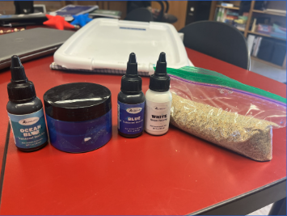
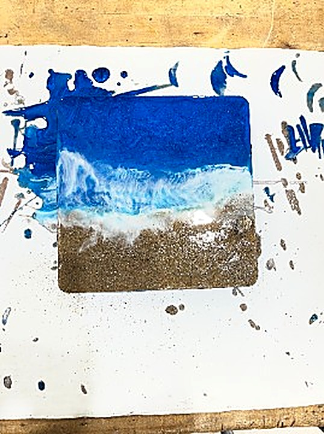
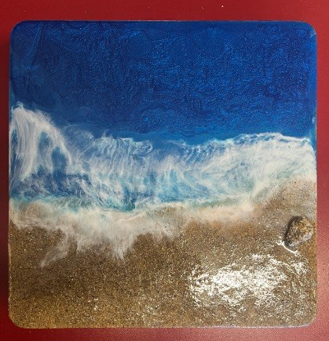
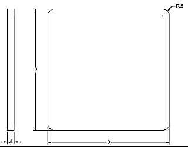

Description
For this project, I combined CNC machining with epoxy resin art to create an ocean scene. The base is a 9 × 9 × 0.5-inch plywood panel with 0.5-inch radius fillets in all four corners. On top, I poured layers of colored epoxy: dark blue on one end, sand on the other, light blue in the middle, and white epoxy along the edge of the sand to create waves.
Materials
- Plywood
- Clear epoxy (resin and hardener)
- Epoxy pigments: white, light blue, and dark blue
- Mica powder
- Sand

Photos


The Fusion 360 design

I designed the base in Fusion 360 as a 9 × 9-inch square, 0.5 inches thick, with 0.5-inch radius fillets in all corners. The rounded corners give the piece a clean, finished look and make it easier for the epoxy to flow smoothly around the edges.
I also planned the layout of the colors before pouring: dark blue epoxy on one end, sand on the other, light blue in the middle, and white epoxy on the edge of the sand for the waves.
Build Process
Machine: Tormach 24R router
Material: 0.5-inch plywood
Finish: Layered epoxy resin with pigments, mica powder, and sand
Tools I used and why
| Tool # | Bit | Operation | What it did |
|---|---|---|---|
| T4 | Flat end mill (upcut) | 2D Contour | Cut the plywood panel to shape, including the 0.5-inch radius corners. As an upcut bit, it pulls chips up and out of the cut for clean edges. |
| — | Heat gun | Finishing | Spread the white epoxy across the board and created bubbles to form the waves. |
Steps
- First I cut my plywood on the router using tool 4. Since it was a very simple cut, it did not take long. After cutting, I sawed off the tabs and sanded the edges until smooth.
- I mixed hardener and resin in a 1:1 ratio and stirred for 5 minutes before adding different colored pigments and sand.
- I poured the sand mixture down first, waited for about 15 minutes for the sand to dry a bit, and proceeded to pour the dark blue, then light blue, and finally white epoxy.
- Finally, I used a heat gun to spread the white epoxy into waves and left the piece on the table for 24 hours to fully dry and harden.
Final Thoughts
I'm proud of how realistic the ocean scene turned out. The dark blue fades into the lighter water, and the white epoxy forms waves that look like they're washing up onto real sand.
This project taught me how to combine machining with epoxy. I designed a clean, accurate base in Fusion 360, cut it on the router, and then learned how to work with epoxy: measuring resin and hardener in the right 1:1 ratio, mixing in pigments, planning the order of each pour, and using a heat gun to shape the waves.